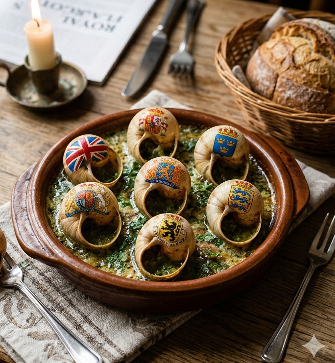

This is the receipt as done by my great great great grandmother.
Ingredients
- Pre-cooked canned snails from the supermarket
- Empty snail shells
Steps
- Warm up the snails in the microwave
- Stamp the shells with your favourite monarchy colours. Place the snails carefully in the shells with tweezers.
Eating these will make you feel regal.